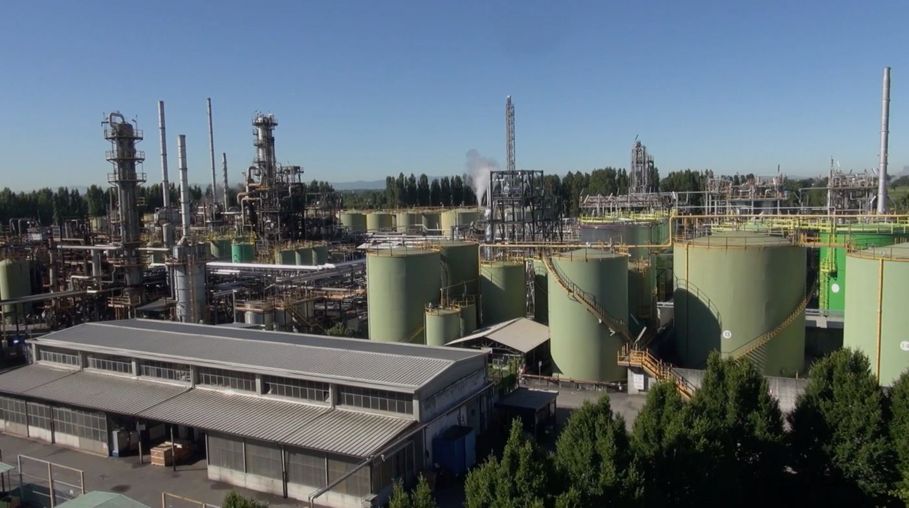

Regeneration
Gli oli usati tornano basi lubrificanti
Itelyum Regeneration è leader europeo nelle basi lubrificanti rigenerate, usate dalle più importanti industrie della lubrificazione al mondo.
- Prodotti
- Basi Gruppo I+ e gamma HG Gruppo II+, che copre oltre il 75% della richiesta di oli motore e il 95% di quelli industriali
- Impianti
- Pieve Fissiraga (LO) e Ceccano
- Resa
- Almeno il 95% dell'olio trattato diventa prodotto, acqua depurata o materia per terzi